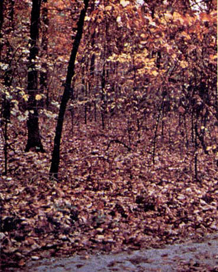
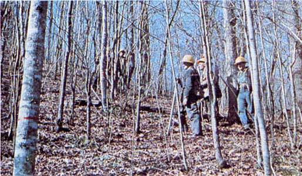
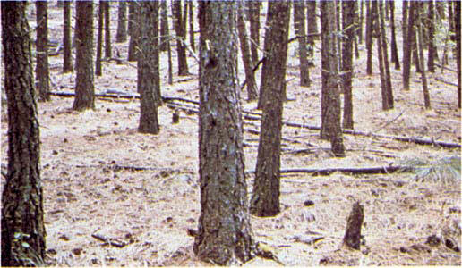

Fires run through the surface litter faster than model 8 and have longer flame height. Both long-needle conifer stands and hardwood stands, especially the oak-hickory types, are typical. Fall fires in hardwoods are predictable, but high winds will actually cause higher rates of spread than predicted because of spotting caused by rolling and blowing leaves. Closed stands of long-needled pine like ponderosa, Jeffrey, and red pines, or southern pine plantations are grouped in this model. Concentrations of dead-down woody material will contribute to possible torching out of trees, spotting, and crowning. Some of the possible field situations fitting this model are shown in photographs 25, 26, and 27.

Photo 25. Western Oregon white oak fall litter; wind tumbled leaves may
cause short-range spotting that may increase ROS above the predicted
value.

Photo 26. Loose hardwood litter under stands of oak, hickory, maple and
other hardwood species of the East.

Photo 27. Long-needle forest floor litter in ponderosa pine stand near
Alberton, Mont.